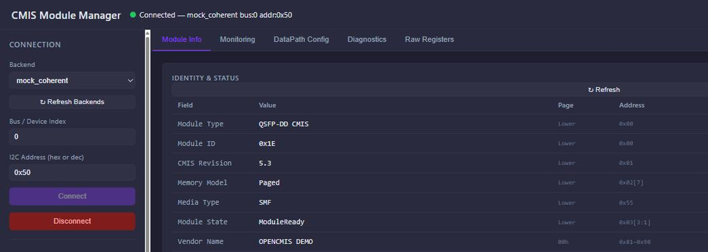

CMIS 模块管理工具
操作手册

扫码关注公众号
扫码关注公众号
CMIS Module Manager 是一款用于调测和管理符合 CMIS（Common Management Interface Specification）标准的光模块的桌面工具。支持读取模块身份信息、实时监控光功率与温度、配置数据通道（DataPath）、执行环回 / PRBS 诊断，以及直接读写任意寄存器。
| Backend | 说明 |
|---|---|
mock_coherent | 模拟 800G QSFP-DD 可调谐相干模块（C-band DWDM, DP-16QAM），无需硬件 |
mock_dr8 | 模拟 800GBASE-DR8（8×100G PAM4, SMF 500m, EML 1310nm），无需硬件 |
mock_sr8 | 模拟 800GBASE-SR8（8×100G PAM4, OM4 100m, VCSEL 850nm），无需硬件 |
mock_fr4x2 | 模拟 2× 400GBASE-FR4（CWDM4 SMF 2km, EML 1310nm），无需硬件 |
ch341 | 通过 CH341 USB 转 I2C 适配器连接真实模块 |
ch347 | 通过 CH347 USB 转 I2C 适配器连接真实模块 |
ftdi | 通过 FTDI 系列芯片连接真实模块 |
| 项目 | 要求 |
|---|---|
| 操作系统 | Windows 10 / Windows 11（64 位） |
| 硬件接口 | USB 端口（使用真实模块时） |
| 驱动程序 |
使用真实模块时需提前安装对应 USB 驱动： · CH341：从 WCH 官网下载 CH341SER.EXE，安装后 CH341DLL.dll 自动注册到系统· CH347：从 WCH 官网下载 CH347SER.EXE（串口驱动）+ CH347DLL.dll（I2C 通信库，需另行获取，详见第 3 节）· CH341 安装驱动后 DLL 自动进入 System32；CH347 可能需要手动将 CH347DLL.dll 放入 EXE 同目录或 System32· Mock 模式（不接硬件）无需安装任何驱动 · WCH 官网（国内）： www.wch.cn 官网（国际）：www.wch-ic.com
|
| 运行时依赖 | 无需安装 Python 或任何运行时，双击 EXE 即可运行 |
使用 CH341 或 CH347 适配器连接真实光模块前，需先在 Windows 中安装对应的 WCH USB 驱动。Mock 模式无需此步骤。
| 外观特征 | 芯片型号 | 需安装的驱动 |
|---|---|---|
| 黑色小板，常见于淘宝低价 I2C 适配器 | CH341A | CH341 驱动 |
| 蓝色板，支持更高速率（USB 2.0 High-Speed） | CH347 | CH347 驱动 |
www.wch.cnwww.wch-ic.comCH341 或 CH347），进入产品页 → 下载 → Windows 驱动压缩包CH341SER.ZIP，内含 CH341SER.EXECH347SER.ZIP，内含 CH347SER.EXECH347DLL.dll。如果安装后工具仍显示 unavailable，需从 WCH 官网搜索 "CH347EVT"（开发资料包）下载，在压缩包内找到 CH347DLL.dll，复制到 CMIS_Module_Manager.exe 同一目录下即可SETUP.EXE（或 CH341SER.EXE / CH347SER.EXE）。USB-SERIAL CH341 (COM×)USB Enhanced Serial Port (COM×)
CMIS_Module_Manager.exe。ch341 或 ch347 选项（状态 available）。CH341DLL.dll 会自动注册到 System32，EXE 无需额外配置。
CH347SER.EXE 安装的是串口驱动（设备管理器可识别设备），但 I2C 通信所需的 CH347DLL.dll 可能不会自动安装到系统。若工具显示 CH347 unavailable，请从 WCH 官网下载 CH347EVT 开发资料包，找到 CH347DLL.dll，复制到 EXE 同目录或 System32 下。
CMIS_Module_Manager.exe，双击运行。CMIS Module Manager starting on http://127.0.0.1:5000
http://127.0.0.1:5000

点击左侧 Backend 下拉菜单，选择对应接口类型：
| Backend | 模拟类型 | 典型场景 | 特征 |
|---|---|---|---|
mock_coherent |
800G QSFP-DD 相干（C-band 可调谐） | DWDM 长途 / DCI | DP-16QAM，支持 Laser Tuning，Pre-FEC BER ~1e-9，16 W |
mock_dr8 |
800GBASE-DR8 | 数据中心内 500m | 8×100G PAM4，SMF MPO 1×16，EML 1310nm，14 W |
mock_sr8 |
800GBASE-SR8 | 机架内 100m (OM4) | 8×100G PAM4，MMF MPO 1×16，VCSEL 850nm，12 W（Bias 极低） |
mock_fr4x2 |
2× 400GBASE-FR4 | 园区 / 楼栋间 2km | CWDM4 × 2，双 LC，EML 1310nm，15 W |
Mock 模块的所有 CMIS 寄存器值（Vendor Name、Connector、Media Interface Technology、Application Descriptors、Power Class 等）均按 CMIS 5.3 规范和实际产品特征构造。仅 mock_coherent 支持 Laser Tuning 功能。
ch341 — CH341A USB-I2C 适配器ch347 — CH347 USB-I2C 适配器（更高速）ftdi — FTDI FT232H/FT2232H 系列点击 ↻ Refresh Backends 可重新扫描（插入 USB 适配器后刷新）。标注 (unavailable) 的选项表示驱动或硬件不可用。
| 字段 | 说明 | 典型值 |
|---|---|---|
| Bus / Device Index | USB 适配器编号，通常为 0 | 0 |
| I2C Address | 光模块 I2C 地址，支持十六进制或十进制 | 0x50 或 80 |
Connected — ch341 bus:0 addr:0x50；标签页解锁；自动加载 Module Info。点击红色 Disconnect 按钮，断开当前连接并清空所有数据。
连接成功后自动加载，显示模块的身份信息、能力广告与当前运行状态。所有字段寄存器地址严格按 CMIS 5.3 规范（OIF-CMIS-05.3.pdf Table 8-26）。
| 字段 | 说明 | Page / Addr |
|---|---|---|
| Module Type | SFF-8024 Identifier（如 QSFP-DD、OSFP、CMIS-Compliant） | Lower / 0x00 |
| CMIS Revision | CMIS 规范版本（如 5.3）。上半字节=主版本，下半字节=次版本 | Lower / 0x01 |
| Memory Model | Paged（支持多页）/ Flat（只有 Page 00h） | Lower / 0x02[7] |
| Media Type | MMF / SMF / Passive Copper / Active Cable / BASE-T | Lower / 0x55 |
| Module State | 当前状态机（见下表） | Lower / 0x03[3:1] |
| Vendor Name | 厂商名称，16 字节 ASCII | 00h / 0x81–0x90 |
| Vendor OUI | IEEE 厂商 OUI，3 字节十六进制 | 00h / 0x91–0x93 |
| Vendor P/N | 厂商料号，16 字节 ASCII | 00h / 0x94–0xA3 |
| Vendor Rev | 产品版本，2 字节 ASCII | 00h / 0xA4–0xA5 |
| Vendor S/N | 序列号，16 字节 ASCII | 00h / 0xA6–0xB5 |
| Date Code | 生产日期码 YYMMDDLL（Y=年, M=月, D=日, L=批次） | 00h / 0xB6–0xBD |
| CLEI Code | CLEI 设备识别码，10 字节 ASCII | 00h / 0xBE–0xC7 |
| 字段 | 说明 | Page / Addr |
|---|---|---|
| Power Class | 模块功耗等级 Class 1–8（bits[7:5]） | 00h / 0xC8 |
| Max Power | 最大功耗（W），原始值 × 0.25 | 00h / 0xC9 |
| Cable Length | 线缆长度（米）。仅对 Copper/Active Cable 有效，光模块显示 "—" | 00h / 0xCA |
| Connector Type | 光口类型：LC / MPO-12 / MPO-16 / SC / CS / SN / RJ45 等（SFF-8024 Table 4-3） | 00h / 0xCB |
| Media Interface Tech | 媒体接口技术：850nm VCSEL / 1310 EML / C-band Tunable / Cu Equalized 等 | 00h / 0xD4 |
| Host Lanes | 主机侧 lane 数（来自 AppDesc#1 高半字节） | Lower / 0x58[7:4] |
| Media Lanes | 媒体侧 lane 数（来自 AppDesc#1 低半字节） | Lower / 0x58[3:0] |
| FW Revision | 激活固件 主版本.次版本 | 01h / 0x84–0x85 |
| HW Revision | 硬件版本 主版本.次版本 | 01h / 0x82–0x83 |
| 字段 | 说明 | Page / Addr |
|---|---|---|
| Temperature | 模块内部温度，signed16 ÷ 256 (°C) | Lower / 0x0E–0x0F |
| Supply Voltage | 供电电压，uint16 × 100 µV | Lower / 0x10–0x11 |
| Alarms | 告警摘要（按 0x09 的 Vcc/Temp Hi/Lo Alarm/Warn 位综合判定） | Lower / 0x08–0x0D |
| 状态 | 编码 (bits[3:1]) | 含义 |
|---|---|---|
ModuleLowPwr | 001b | 模块处于低功耗模式 |
ModulePwrUp | 010b | 模块正在上电初始化 |
ModuleReady | 011b | 模块正常工作 正常 |
ModulePwrDn | 100b | 模块正在下电 |
ModuleFault | 101b | 模块故障 异常 |
点击右上角 ↻ Refresh 手动刷新。
| 列 | 说明 | Page / Addr |
|---|---|---|
| Lane | 通道编号（1–8） | — |
| Tx Power | 发送光功率（µW 和 dBm） | 11h / 0x9A+(n−1)×2 |
| Tx Bias | 发送偏置电流（mA） | 11h / 0xAA+(n−1)×2 |
| Rx Power | 接收光功率（µW 和 dBm） | 11h / 0xBA+(n−1)×2 |
| DataPath State | 数据通道状态，4 bits/lane（见下表枚举） | 11h / 0x80–0x83 |
| Config Status | 上次 Apply 配置的结果（ConfigSuccess / ConfigRejected / ConfigInProgress 等） | 11h / 0xCA–0xCD |
| 编码 | 名称 | 说明 |
|---|---|---|
0x1 | Deactivated | 未激活 |
0x2 | Init | 初始化中 |
0x3 | Deinit | 去初始化中 |
0x4 | Activated | 已激活 正常 |
0x5 | TxTurnOn | 发送启动中 |
0x6 | TxTurnOff | 发送关闭中 |
0x7 | Initialized | 初始化完成（未激活发送） |
| 颜色 | 含义 |
|---|---|
| 正常 | 功率在 −10 dBm ~ +3 dBm 之间 |
| 橙色 | 功率低于 −10 dBm（偏低） |
| 红色 | 功率高于 +3 dBm（偏高） |
顶部摘要栏同步显示温度和电压：超过 60°C → 橙色；超过 70°C → 红色。
| 选项 | 说明 |
|---|---|
| 1 s | 每秒刷新一次 |
| 2 s（默认） | 每 2 秒刷新一次 |
| 5 s | 每 5 秒刷新一次 |
| 10 s | 每 10 秒刷新一次 |
| Manual | 关闭自动刷新，点击 ↻ Now 手动触发 |
| 参数 | Page / Addr | High Alarm | Low Alarm | High Warn | Low Warn |
|---|---|---|---|---|---|
| Temperature (°C) | 02h/0x80–87 | 过温告警 | 欠温告警 | 过温警告 | 欠温警告 |
| Vcc (V) | 02h/0x88–8F | 过压告警 | 欠压告警 | 过压警告 | 欠压警告 |
| Tx Power (dBm) | 02h/0xB0–B7 | 光功率上下限阈值 | |||
| Tx Bias (mA) | 02h/0xB8–BF | 偏置电流上下限阈值 | |||
| Rx Power (dBm) | 02h/0xC0–C7 | 接收光功率上下限阈值 | |||
| 列 | 含义 | Page / Addr |
|---|---|---|
| Tx Fault | 发送故障 | 11h / 0x87 |
| Tx LOS | 发送端信号丢失 | 11h / 0x88 |
| Tx CDR-LOL | 发送 CDR 失锁 | 11h / 0x89 |
| Rx LOS | 接收端信号丢失 | 11h / 0x93 |
| Rx CDR-LOL | 接收 CDR 失锁 | 11h / 0x94 |
| Alarms/Warns | 功率 / 偏置综合告警状态 | 11h / 0x8B–0x98 |
图标：● 正常 ▲ WARN ■ ALARM
模块级控制寄存器（Lower 0x1A），用于软复位与低功耗模式切换。
| 控制项 | 含义 | Page / Addr |
|---|---|---|
| Reset Module | 向 0x1A[3] 写 1 触发软件复位。所有 DataPath 将重新进入 Init 状态 | Lower / 0x1A[3] |
| Enter LowPwr | 向 0x1A[4] 写 1 请求进入低功耗模式 | Lower / 0x1A[4] |
| Exit LowPwr | 清除 0x1A[4] 请求退出低功耗模式 | Lower / 0x1A[4] |
读取 Lower Memory 0x56–0x75 的 Application Descriptor 表（最多 8 组），列出模块广告的 Host/Media Interface ID 组合。
| 列 | 说明 |
|---|---|
| AppSel | 应用码序号（1–8），写入 DataPath 配置表时使用 |
| Host Interface ID | SFF-8024 主机侧接口 ID（如 0x4F=200GAUI-2-S、0x4D=100GAUI-2） |
| Media Interface ID | 媒体侧接口 ID（取决于 Media Type） |
| Host Lanes / Media Lanes | 该应用需要的主机侧 / 媒体侧 lane 数 |
| Host Lane Assign | 8-bit 位图，指示该应用可以从哪些主机 lane 起始（bit 0 = lane 1） |
| 列 | 说明 | Page / Addr |
|---|---|---|
| Lane | 通道编号（1–8） | — |
| AppSelect | 应用码选择（0–15）。DPConfigLane，每 lane 1 字节：bits[7:4]=AppSelCode，bits[3:1]=DataPathID，bit[0]=ExplicitControl | 10h / 0x91+(n−1) |
| TX Enable | 勾选 = 发送使能；取消 = 禁用（OutputDisableTx 取反） | 10h / 0x82[n−1] |
| TX Pol Flip | TX 侧输入极性翻转（InputPolarityFlipTx） | 10h / 0x81[n−1] |
| RX Pol Flip | RX 侧输出极性翻转（OutputPolarityFlipRx） | 10h / 0x89[n−1] |
| DP Deinit | DataPath 去初始化状态（只读） | 11h / 0x80 |
| 控制项 | 含义 | Page / Addr |
|---|---|---|
| AutoSquelchDisableTx | 勾选 = 禁用 Tx 自动 Squelch 控制器 | 10h / 0x83 |
| OutputSquelchForceTx | 勾选 = 强制 Tx 输出 Squelch | 10h / 0x84 |
| OutputDisableRx | 勾选 = 禁用 Rx 输出 | 10h / 0x8A |
| AutoSquelchDisableRx | 勾选 = 禁用 Rx 自动 Squelch 控制器 | 10h / 0x8B |
| 模式 | 说明 | Page / Addr |
|---|---|---|
| MediaSide Output | 媒体侧输出环回 | 13h / 0xB4 |
| MediaSide Input | 媒体侧输入环回 | 13h / 0xB5 |
| HostSide Output | 主机侧输出环回 | 13h / 0xB6 |
| HostSide Input | 主机侧输入环回 | 13h / 0xB7 |
每个 PRBS 块为 8 字节：Enable（使能位图）/ Invert（数据反转位图）/ ByteSwap（PAM4 MSB/LSB 交换位图）/ PreFEC（FEC 编码前注入）/ Pattern×4（4 字节, 4 bits/lane）。
| 分区 | En | Invert | ByteSwap | PreFEC | Pattern |
|---|---|---|---|---|---|
| Host-Side Generator | 13h/0x90 | 0x91 | 0x92 | 0x93 | 0x94–0x97 |
| Media-Side Generator | 13h/0x98 | 0x99 | 0x9A | 0x9B | 0x9C–0x9F |
支持码型：PRBS7 / PRBS9 / PRBS13 / PRBS15 / PRBS23 / PRBS31 及其 Q 变体，以及 SSPRQ（Table 8-105）。
| 分区 | En | Invert | ByteSwap | PostFEC | Pattern | LOL 地址 |
|---|---|---|---|---|---|---|
| Host-Side Checker | 13h/0xA0 | 0xA1 | 0xA2 | 0xA3 | 0xA4–0xA7 | 14h/0x8A |
| Media-Side Checker | 13h/0xA8 | 0xA9 | 0xAA | 0xAB | 0xAC–0xAF | 14h/0x8B |
每 lane 对应 LOL 列显示 Pattern Checker Loss of Lock 状态：● 锁定 / LOL 失锁
向 14h/0x80 写入 Selector = 0x01 选择 BER F16 诊断。Host BER 在 14h/0xC0，Media BER 在 14h/0xD0，每通道 2 字节。
F16 解码公式（CMIS 5.3 十进制浮点）：BER = mantissa × 10^(exp − 24)，其中 bits[15:11]=exp, bits[10:0]=mantissa。
| 信号质量 | 典型 pre-FEC BER |
|---|---|
| 接近底噪（优良） | < 1e-9 ~ 1e-8 |
| 正常工作 | 1e-8 ~ 1e-4 |
| 边缘 | 1e-4 ~ 1e-3 |
| 劣化 | > 1e-3 |
向 14h/0x80 写入 Selector = 0x06 选择 SNR 诊断。Host SNR 在 14h/0xD0，Media SNR 在 14h/0xF0，每通道 2 字节小端 u16，单位 1/256 dB。
典型 400G/800G 链路 SNR 范围：PAM4 DSP 输出约 15–22 dB，越高越好。低于 13 dB 通常意味着链路劣化。
使用 Page 14h Diagnostic Selectors 0x02–0x05 读取每通道累计的 Error Count 和 Total Bits Count（U64 小端序）。
| Selector | 说明 |
|---|---|
0x02 | Host 侧 Lane 1–4 Error + Total Bits 计数 |
0x03 | Host 侧 Lane 5–8 计数 |
0x04 | Media 侧 Lane 1–4 计数 |
0x05 | Media 侧 Lane 5–8 计数 |
每通道 16 字节（8 字节 ErrorCount + 8 字节 TotalBitsCount）。TotalBitsCount 最低位为 PSL（Pattern Sync Loss）指示位：0=同步正常，1=曾经失锁。
GUI 同时计算并显示 BER(calc) = ErrorCount / TotalBitsCount 方便直读。
适用于 C-band / L-band 可调谐激光器模块（Media Interface Technology = 0x10/0x11）。
Page 04h（只读能力广告）：支持的 Grid 列表、通道范围、Fine Tuning 分辨率/范围、可编程输出功率范围。
Page 12h（读写控制）：
| 字段 | Access | 说明 | Page / Addr |
|---|---|---|---|
| Grid Spacing | RW | Grid 选择 + Fine Tuning 使能 | 12h / 0x80+lane |
| Channel Number | RW | S16 通道偏移 n，频率 = 193.1 + n × step (THz) | 12h / 0x88+lane×2 |
| Fine Offset | RW | S16，单位 0.001 GHz (1 MHz) | 12h / 0x98+lane×2 |
| Current Frequency | RO | U32，单位 0.001 GHz → THz = val / 10^6 | 12h / 0xA8+lane×4 |
| Target Power | RW | S16，单位 0.01 dBm | 12h / 0xC8+lane×2 |
| Tuning Status | RO | bit 1=TuningInProgress, bit 0=WavelengthUnlocked | 12h / 0xDE+lane |
Mock 后端完整模拟了 CMIS 状态机行为，方便无硬件演示：
| 操作 | 响应行为 |
|---|---|
| Software Reset | ModuleState: Ready → LowPwr (0.3s) → PwrUp (0.5s) → Ready (0.8s)，所有 DataPath 经历 Deactivated → Activated |
| Enter LowPwr | ModuleState → LowPwr，所有 DataPath → Deactivated，TxPower = 0 |
| Exit LowPwr | ModuleState → Ready，所有 DataPath → Activated |
| TX Disable | 被禁用 lane 的 TxPower 降为 0，TxFault 标志置位，DP State → Deactivated |
| Apply DataPath | Config Status 先变为 ConfigInProgress，DP State 经历 Init → TxTurnOn → Activated（约 0.5s） |
| PRBS Checker Enable | LOL Flag 先置位（失锁），0.3s 后自动清除（锁定） |
| Laser Tune | 写入 Grid/Channel 后，Current Frequency 实时更新，Status 显示 Locked |
0x00、0x11）0x80）结果以十六进制 Dump 格式显示：
0x80: A1 B2 C3 D4 E5 F6 01 02 ........ 0x88: 03 04 05 06 07 08 09 0A ........
格式：地址: 十六进制字节 ASCII（不可打印字符显示为 .）
1E 50 00）0x80 为上页寄存器，工具自动切页；地址 < 0x80 为下页，忽略 Page 字段。
mock_coherent/dr8/sr8/fr4x2，没有 ch341/ch347/ftdiunavailable → 串口驱动（CH347SER.EXE）只让系统识别设备，但 I2C 通信需要 CH347DLL.dll，该文件可能未随驱动自动安装。从 WCH 官网下载 CH347EVT 开发资料包，找到 CH347DLL.dll，复制到 EXE 同目录，重启工具即可。详见第 3 节。0x50）、Bus 编号正确；检查模块与适配器的物理连接。ModuleReady；检查光纤连接。mock_coherent（800G 相干可调谐）、mock_dr8、mock_sr8、mock_fr4x2，分别模拟不同类型 800G QSFP-DD 模块。mock_dr8/sr8/fr4x2 的 Laser Tuning 卡片显示"非可调谐模块"？mock_coherent（Media Interface Tech = 0x10 C-band tunable）支持 Laser Tuning 功能。真实模块的 Page 04h GridSupported 寄存器若为 0，说明不支持调谐。mock_fr4x2 的 Host/Media Lanes 为什么显示 8 而不是 4？| 按钮 | 位置 | 功能 |
|---|---|---|
| ↻ Refresh Backends | 左侧面板 | 重新扫描可用 Backend |
| Connect | 左侧面板 | 连接模块 |
| Disconnect | 左侧面板 | 断开连接 |
| ↻ Refresh | 各标签页 | 手动刷新当前页数据 |
| Apply | DataPath / Diagnostics | 将修改写入模块并生效 |
| ↻ Now | Monitoring | 立即手动刷新一次监控数据 |
| Read | Raw Registers | 读取指定寄存器 |
| Write | Raw Registers | 写入指定寄存器 |